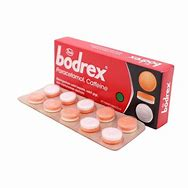
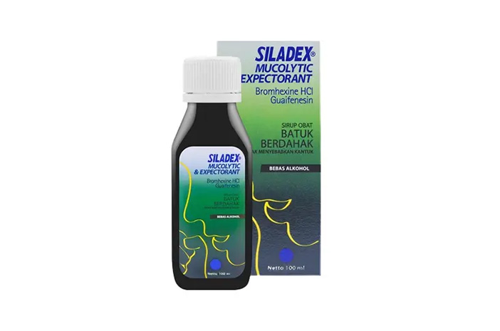

Katalog Obat |
|||

|

|
 |  |
Tolak Angin |
Minyak Kayu Putih |
Bodrex |
Siladex |
Untuk masuk angin dengan gejala kembung, mual, sakit perut, pusing, meriang, dan tenggorokan kering. Baik diminum saat perjalan jauh, kecapaian dan kurang tidur. Untuk memelihara/menjaga daya tahan tubuh. |
meredakan sakit perut, perut kembung atau mulas, membantu mengatasi gejala masuk angin. |
Obat ini digunakan untuk meringankan sakit kepala, sakit gigi, dan menurunkan demam. Meringankan sakit kepala, sakit gigi dan menurunkan demam. |
Obat ini digunakan untuk meredakan batuk tidak berdahak atau batuk kering yang disertai alergi |